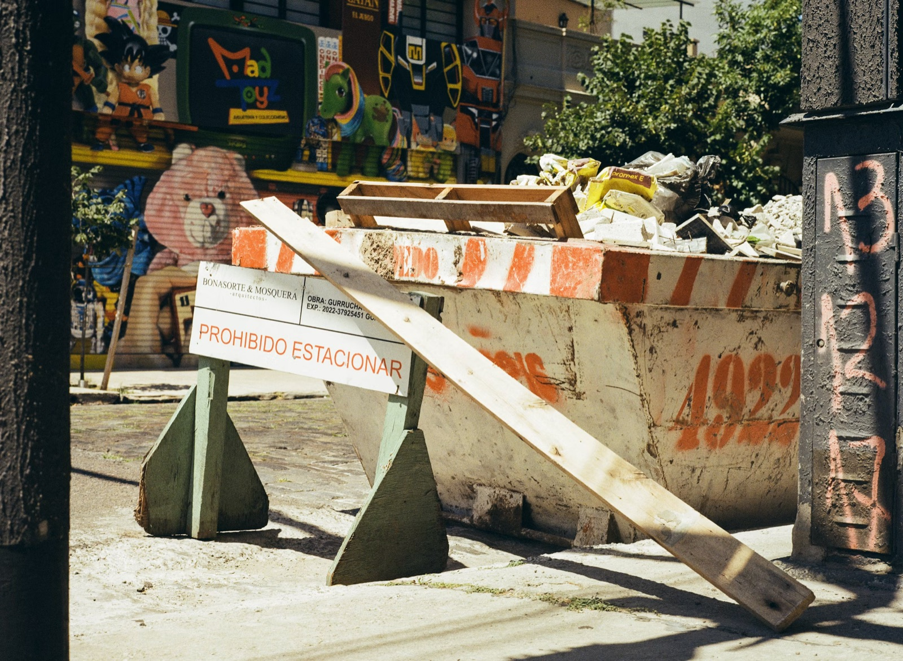

DINO POPUSOI · GESCHÄFTSFÜHRER
DP BAU
Dein Profi
Rohbau, Maurerarbeiten, Betonarbeiten, Brückeninstandsetzung und Tiefbauarbeiten aus Krefeld – mit Erfahrung, Zuverlässigkeit und Qualitätsbewusstsein.

DINO POPUSOI · GESCHÄFTSFÜHRER
Dein Profi
Rohbau, Maurerarbeiten, Betonarbeiten, Brückeninstandsetzung und Tiefbauarbeiten aus Krefeld – mit Erfahrung, Zuverlässigkeit und Qualitätsbewusstsein.
Unsere Leistungen
Fundamente, Mauerwerk, Decken und Tragkonstruktionen – fachgerecht und termingerecht ausgeführt.
Mauerwerk in Ziegel, Kalksandstein oder Beton – präzise für Neubauten und Sanierungen.
Bodenplatten, Stützen, Wände und Decken aus Beton – sorgfältig geplant und ausgeführt.
Gebäudesanierungen, Fassadenarbeiten und Instandsetzung – wir erhalten und modernisieren Ihre Immobilie.
Instandsetzung und Sanierung von Brückenbauwerken – von der Betoninstandsetzung bis zur Pflege der Infrastruktur. Wir sorgen dafür, dass Bauwerke langfristig sicher und funktionstüchtig bleiben.

Verlegung von Glasfaserkabeln und Tiefbauarbeiten für eine zuverlässige Infrastruktur – von der Kabelverlegung bis zum fertigen Erdbau.


Außerdem im Angebot
Unterhalts-, Grund-, Baugrob- und Bauendreinigung sowie Fenster-, Glas- und Fassadenreinigung für Büros, Gewerbeobjekte und Baustellen.
Über uns
Unter der Leitung von Dino Popusoi steht DP Bau für soliden Rohbau, fachgerechte Brückeninstandsetzung und professionelle Tiefbau- sowie Glasfaserarbeiten. Mit Sitz in Krefeld sind wir in der Region und darüber hinaus für Sie im Einsatz.
Kontakt
Dino Popusoi · Geschäftsführer